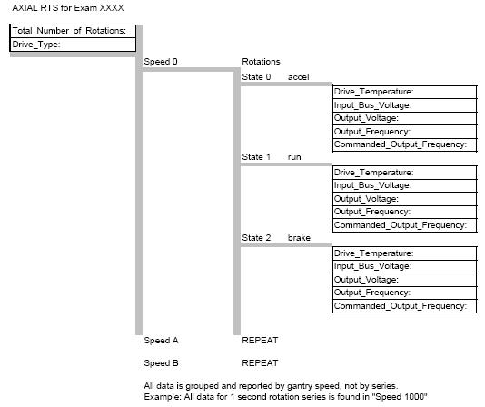

Operating Documentation
Direction 5181178-800, Rev# 16
BrightSpeed Select Service Methods Gen
Module Version 1.0, Version Date 2/16/07
Operating Documentation |
This document defines the available Real Time Statistics (RTS) data available on the system for the Axial Drive subsystem. The RTS data is sent by the TGP to the host at the end of each exam.
The RTS viewer for the Axial Stats shows a listing of information related to the Axial Drive. See Illustration 1 for a pictorial view of the data to help in understanding the information seen. The information is grouped into rotation speeds and 3 drive states for the listed exam. The data is not organized by series.
Illustration 1: Axial Stats data organization

Table 1: Axial Stats Example
| RTS (Real Time Statistics) Name | Example | Unit | Range | Explanation |
| Date: Thu Apr 1 12:09:06 2004 | Date/Time indication for this data set | |||
| ENDEXAM: ID 50083 | exam ID | |||
| Total_Number_of_Rotations: | 1966 | count | rotations for this exam | |
| Drive_Type: | 0 | |||
| Rotation:: | ||||
| Speed: | 0 | msec per rotation | Scout speed defined as zero. All data in this section is for all series run at this speed for this exam. | |
| Rotations_at_this_Speed: | 0 | count | Number of rotations at this speed for this exam. | |
| State_Group:: | ||||
| State: | 0 | flag | Gantry state 0=accel, 1=run, 2=brake | |
| Drive_Temperature: | NaN | Degrees C | ”Not a Number” indicates no scans run at this speed. | |
| Input_Bus_Voltage: | NaN | Volts | ”Not a Number” indicates no scans run at this speed. | |
| Output_Voltage: | NaN | Volts | ”Not a Number” indicates no scans run at this speed. | |
| Output_Frequency: | NaN | Hertz | ”Not a Number” indicates no scans run at this speed. | |
| Commanded_Output_Frequency: | NaN | Hertz | ”Not a Number” indicates no scans run at this speed. | |
| State_Group:: | ||||
| State: | 1 | flag | Gantry state 0=accel, 1=run, 2=brake | |
| Drive_Temperature: | 50 | Degrees C | ||
| Input_Bus_Voltage: | 590.723 | Volts | ||
| Output_Voltage: | 98.94 | Volts | ||
| Output_Frequency: | 25.994 | Hertz | ||
| Commanded_Output_Frequency: | 65 | Hertz | ||
| State_Group:: | ||||
| State: | 2 | flag | Gantry state 0=accel, 1=run, 2=brake | |
| Drive_Temperature: | NaN | Degrees C | ||
| Input_Bus_Voltage: | NaN | Volts | ||
| Output_Voltage: | NaN | Volts | ||
| Output_Frequency: | NaN | Hertz | ||
| Commanded_Output_Frequency: | NaN | Hertz | ||
| Rotation:: | ||||
| Speed: | 1000 | msec per rotation | All data in this section is for all series run at this speed for this exam. Ie. All series at 1 sec. | |
| Rotations_at_this_Speed: | 219 | count | Number of rotations at this speed for this exam. | |
| State_Group:: | ||||
| State: | 0 | flag | Gantry state 0=accel, 1=run, 2=brake | |
| Drive_Temperature: | 52.105263 | Degrees C | ||
| Input_Bus_Voltage: | 706.641789 | Volts | ||
| Output_Voltage: | 140.573 | Volts | ||
| Output_Frequency: | 41.527553 | Hertz | ||
| Commanded_Output_Frequency: | 25.999 | Hertz | ||
| State_Group:: | ||||
| State: | 1 | flag | Gantry state 0=accel, 1=run, 2=brake | |
| Drive_Temperature: | 51.833333 | Degrees C | ||
| Input_Bus_Voltage: | 602.297517 | Volts | ||
| Output_Voltage: | 98.725217 | Volts | ||
| Output_Frequency: | 26.339633 | Hertz | ||
| Commanded_Output_Frequency: | 25.999 | Hertz | ||
| State_Group:: | ||||
| State: | 2 | flag | Gantry state 0=accel, 1=run, 2=brake | |
| Drive_Temperature: | 51 | Degrees C | ||
| Input_Bus_Voltage: | 593.2495 | Volts | ||
| Output_Voltage: | 10.8375 | Volts | ||
| Output_Frequency: | 715823.7168 | Hertz | ||
| Commanded_Output_Frequency: | 6.499 | Hertz | ||
| Data continues to repeat for each speed. |